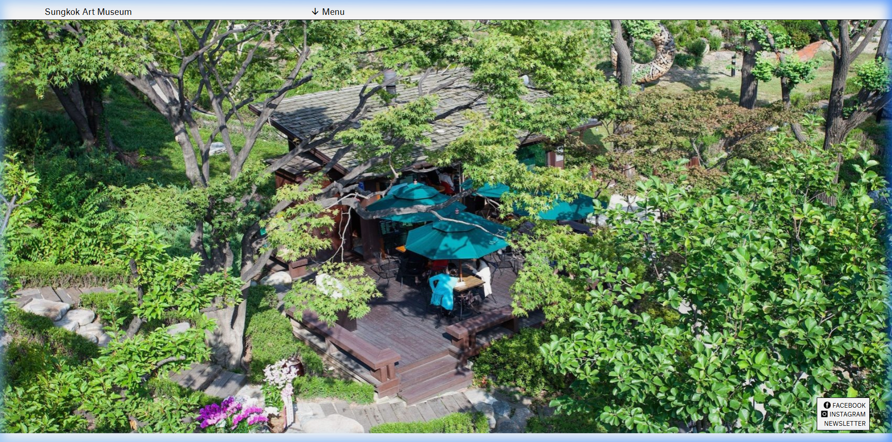
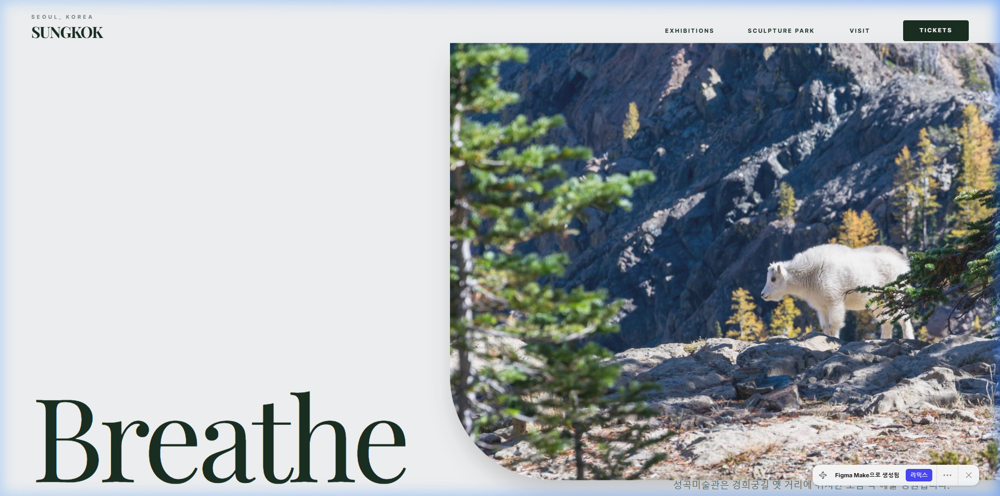

도심 속 푸른 휴식처의 깊이와 여백을 담아내다. 자연, 숨(Breathe), 그리고 예술의 프리미엄 리브랜딩 웹 디자인 컨셉안.
성곡미술관은 쌍용그룹 창업주인 성곡 김성곤 선생의 호를 따서 설립된 대한민국 최초의 정원형 사립 미술관입니다. 서울 역사박물관 뒷길인 유서 깊은 신문로 경희궁길에 위치하고 있어, 도심 한복판에서도 수십 년 된 울창한 나무 터널과 아름다운 목조 산책로를 걸을 수 있는 축복받은 숲 속 문화 공간입니다.
국내외 저명한 조각가들의 작품들이 정원 곳곳에 자연과 공명하며 배치되어 있어, 방문객들에게 단순한 전시 관람을 넘어 일상의 바쁨을 내려놓고 '숨을 쉴 수 있는 최고의 휴식처' 역할을 하고 있습니다.
"자연과 조각이 혼연일체되어 속삭이는 숲 속에서 비로소 복잡했던 머리가 숨을 쉬기 시작한다."성곡미술관 정원 산책로 평평서문 중

상단에 단출하게 'Menu'라는 텍스트 드롭다운 하나만 노출되어 있어, 미술관이 제공하는 핵심 콘텐츠(진행 중인 전시, 야외 조각 공원 소개, 오시는 길)에 대한 접근성이 극도로 낮아 방문자들이 사이트 내에서 쉽게 길을 잃습니다.
수십 년 된 울창한 조각 정원이라는 성곡미술관 최고의 가치와 피톤치드 넘치는 푸른 감성이 홈페이지에는 단 한 줌도 반영되지 않았습니다. 투박하고 딱딱한 옛날식 단순 정보 나열 레이아웃으로 인해 미술관의 매력이 상실되어 있었습니다.
전시 미술관 홈페이지는 관람 티켓 예약 및 요금 정보, 운영 시간 안내가 핵심 비즈니스 요소입니다. 기존 사이트는 이러한 예매 전용 콜투액션(CTA) 버튼이나 유입 동선이 완전히 배제되어 실용성이 무척 떨어집니다.
도심 속 숲 정원의 깊고 맑은 공기를 상징하는 컬러 스케일을 채택하여, 사용자가 웹사이트를 켜는 것만으로 피톤치드를 느끼도록 유도합니다.
진지한 예술성과 자연을 닮은 여백을 조화롭게 녹여내는 이원 서체 구조입니다.
Aesthetic Serif typeface for artistic heritage
"Breathe (숨쉬다)"라는 단 하나의 강력한 감성 키워드를 중심으로, 도심 속 비밀의 정원을 걷는 듯한 곡선 미학과 하이엔드 아트 매거진 스타일을 접목시켰습니다.

UI/UX Designer
성곡미술관 야외 조각 공원을 직접 산책하며 수십 년 된 나무 향기와 피톤치드를 들이켜는 순간, 이 맑은 숨결과 웅장한 자연 정원의 가치가 정작 디지털 세상인 기존 홈페이지에는 단 1%도 담기지 못하고 있다는 강한 아쉬움을 안고 기획을 시작했습니다.
그래서 메인 화면을 열자마자 숨이 고요해지며 신선한 공기가 연상되도록 'Breathe(숨쉬다)'라는 명료하고 서정적인 타이포 브랜딩을 던졌습니다. 정원 흙바닥과 돌조각을 나타내는 포근한 Warm Sand 바탕 위에, 깊은 수풀을 상징하는 Forest Green 컬러를 조화시켜 자연의 향기를 모던 럭셔리 매거진 양식으로 연출했습니다.
동시에 비즈니스 가치도 함께 고민했습니다. 티켓 발급 CTA를 상단에 명확하게 배치하고 직관적인 메인 탐색(EXHIBITIONS, SCULPTURE PARK 등)을 심어, 미술관의 문화 예술 콘텐츠가 관람객 유치로 자연스럽게 귀결될 수 있도록 설득력 있는 UX 파이프라인을 완성했습니다.